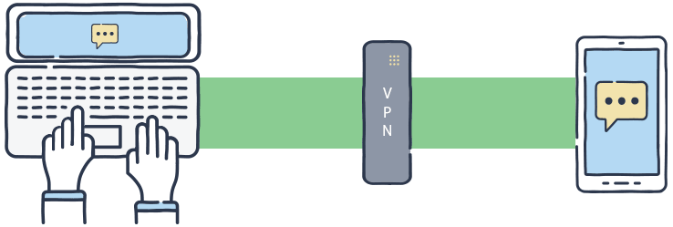

Consejos para protegerte en línea
A continuación, te ofrecemos algunas recomendaciones básicas para mejorar tu seguridad en internet:
- Usa contraseñas seguras: Asegúrate de que tus contraseñas sean largas y difíciles de adivinar. Utiliza una combinación de letras, números y caracteres especiales.
- Actualiza tu software: Mantén actualizado tu sistema operativo, navegador y cualquier otro software que utilices.
- Utiliza autenticación de dos factores (2FA): Siempre que sea posible, habilita la autenticación de dos factores para añadir una capa extra de seguridad.

- Evita hacer clic en enlaces sospechosos: No abras enlaces o archivos adjuntos en correos electrónicos de remitentes desconocidos.

- Usa una red VPN: Cuando accedas a internet desde una red pública, utiliza una VPN para proteger tu conexión. 
- Haz copias de seguridad: Regularmente guarda una copia de tus archivos importantes en un lugar seguro, como un disco externo o en la nube.
Enlaces útiles para evitar ataques cibernéticos:
Consejos de Ciberseguridad de Lisa InstituteCómo prevenir ataques cibernéticos - Kaspersky